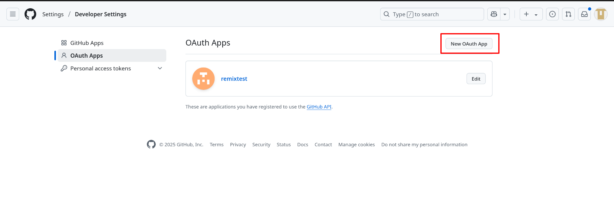
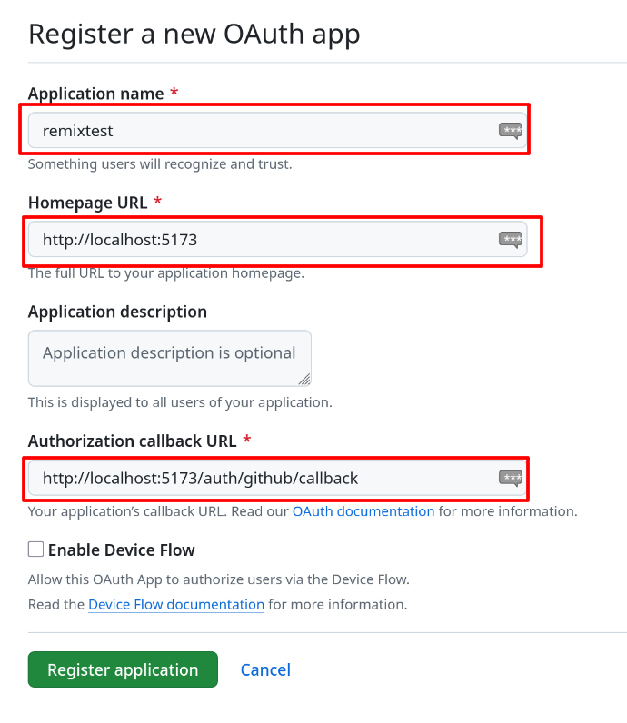
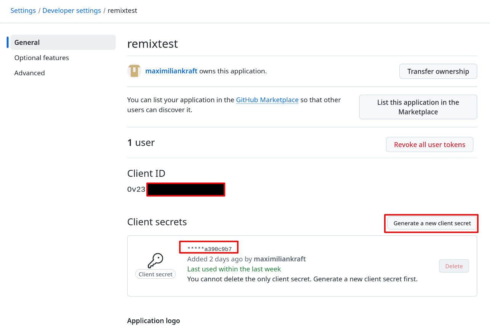

OAuth 2.0 Authentifizierung mit GitHub in einer Remix-Anwendung
Einführung in OAuth 2.0
OAuth 2.0 ist ein offener Standard für Authentifizierungs- und Autorisierungsprozesse, der es Diensten von Drittanbietern ermöglicht, auf Ressourcen eines Benutzers zuzugreifen, ohne dessen Zugangsdaten direkt zu verwenden. Dieser Prozess wird durch ein Token-System realisiert, das temporären Zugriff auf bestimmte Ressourcen gewährt.
Der OAuth 2.0 Prozess ist in RFC 6749 standardisiert und umfasst vier Rollen:
- Resource Owner: Der Benutzer, der Zugriff auf sein Konto gewähren kann
- Client: Die Anwendung, die Zugriff auf das Konto des Benutzers anfordert
- Authorization Server: Der Server, der Zugriffstoken ausstellt
- Resource Server: Der Server, der die geschützten Ressourcen hostet
Der OAuth 2.0 Autorisierungsablauf mit GitHub
Der OAuth 2.0 Ablauf, speziell für die GitHub-Authentifizierung, läuft folgendermaßen ab:
- Autorisierungsanfrage: Die Anwendung leitet den Benutzer zur GitHub-Autorisierungsseite weiter
- Benutzerautorisierung: Der Benutzer genehmigt die Zugriffsanfrage
- Autorisierungscode: GitHub sendet einen temporären Code an die Anwendung zurück
- Tokenanfrage: Die Anwendung tauscht diesen Code gegen ein Zugriffstoken aus
- Ressourcenzugriff: Mit diesem Token kann die Anwendung auf die API und Ressourcen zugreifen
Einrichten einer GitHub OAuth-App
Um OAuth mit GitHub zu verwenden, muss eine OAuth-App in den GitHub-Entwicklereinstellungen registriert werden.
Schritt 1: Erstellen einer neuen OAuth-App in GitHub
- Melde dich bei GitHub an
- Navigiere zu den GitHub Developer Settings
- Wähle "OAuth Apps" und klicke auf "New OAuth App"

Schritt 2: Konfiguration der OAuth-App
Fülle folgende Felder aus:
- Application name: Ein aussagekräftiger Name für deine App (z.B. "Remix GitHub Login")
- Homepage URL: Die Basis-URL deiner Anwendung (z.B. "http://localhost:5173")
- Application description: (Optional) Eine kurze Beschreibung deiner Anwendung
- Authorization callback URL: Die URL, an die GitHub nach der Authentifizierung weiterleitet (z.B. "http://localhost:5173/auth/github/callback")

Schritt 3: Client ID und Client Secret
Nach dem Erstellen der App erhältst du zwei wichtige Credentials:
- Client ID: Öffentlicher Identifikator für deine App
- Client Secret: Geheimer Schlüssel, der sicher aufbewahrt werden muss
Diese Credentials werden in deiner Anwendung benötigt, um den OAuth-Prozess zu durchlaufen.

Umsetzung in einer Remix-Anwendung
In diesem Projekt wurde der OAuth 2.0 Authentifizierungsfluss mit GitHub direkt implementiert, ohne die Passport.js-Middleware zu verwenden. Dies bietet mehr Kontrolle über den Authentifizierungsprozess und erleichtert das Verständnis der einzelnen Schritte.
Code-Beispiel: Einleitung des OAuth-Flows
// app/auth/github.ts (Auszug)
export const githubStrategy = {
options: {
clientID: "your-client-id",
clientSecret: "your-client-secret",
callbackURL: "http://localhost:5173/auth/github/callback",
},
getAuthorizationURL(scopes: string[] = ["user:email"]) {
const url = new URL("https://github.com/login/oauth/authorize");
url.searchParams.set("client_id", this.options.clientID);
url.searchParams.set("redirect_uri", this.options.callbackURL);
url.searchParams.set("scope", scopes.join(" "));
return url.toString();
},
// Weitere Methoden...
};
Code-Beispiel: Verarbeitung des Callback
// app/routes/auth.github.callback.tsx (Auszug)
export let loader: LoaderFunction = async ({ request }) => {
try {
const url = new URL(request.url);
const code = url.searchParams.get("code");
if (!code) {
return redirect("/login?error=github-auth-failed-no-code");
}
// Code gegen Access Token austauschen
const accessToken = await githubStrategy.getAccessToken(code);
// Benutzerprofil abrufen
// Anleitung dazu findest du hier: https://docs.github.com/en/apps/oauth-apps/building-oauth-apps/authorizing-oauth-apps#3-use-the-access-token-to-access-the-api
const profile = await getUserProfile(accessToken);
// In Session speichern
const session = await getSession(request.headers.get("Cookie"));
session.set("user", {
id: profile.id,
displayName: profile.displayName || profile.username,
// Weitere Benutzerdaten...
});
return redirect("/", {
headers: {
"Set-Cookie": await commitSession(session)
}
});
} catch (error) {
return redirect("/login?error=github-auth-failed");
}
};
Aufgabe: GitHub OAuth in einer Remix-Anwendung
In dieser Aufgabe erstellst du eine Remix-Anwendung mit GitHub-Authentifizierung. Befolge die folgenden Schritte, um diese Funktionalität zu implementieren:
1. Neue Remix-Anwendung erstellen
Verwende die Vorlage auf Moodle, ODER
Erstelle eine neue Remix-Anwendung mit folgendem Befehl:
npx create-remix@latest
Folge den Anweisungen im Terminal, um die Anwendung zu konfigurieren.
2. GitHub OAuth-App einrichten
Erstelle eine OAuth-App in deinen GitHub-Entwicklereinstellungen, wie oben beschrieben:
- Application name: Remix GitHub Login
- Homepage URL: http://localhost:5173
- Authorization callback URL: http://localhost:5173/auth/github/callback
Notiere dir die erhaltene Client ID und das Client Secret.
3. Übersicht der Userdaten
Nachdem der OAuth-Flow fertig ist, erhalten wir die Userdaten in einem JSON-Dokument. Erstelle eine schöne Übersicht in der der Benutzername, E-Mail und optional noch weitere Informationen deines Accounts ersichtlich sind. Beim Design kannst du dich an dem Code aus login.tsx orientieren. Die Übersicht soll in _index.tsx implementiert werden. /auth/github/callback verweist dort hin wenn der OAuth-Flow fertig ist.
4. Anwendung testen
Starte die Anwendung mit:
npm run dev
Öffne http://localhost:5173 und teste den "Login with GitHub"-Button.